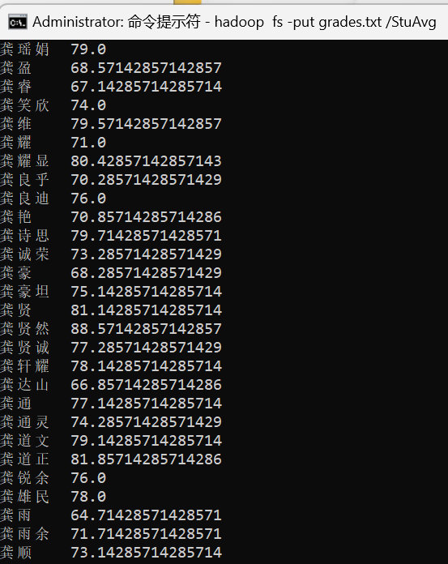
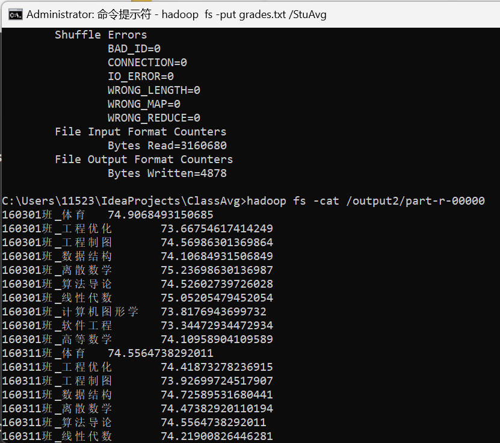
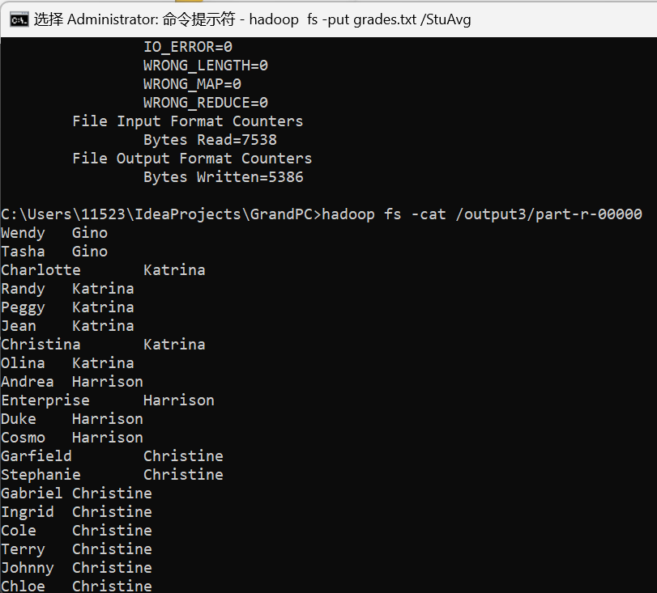
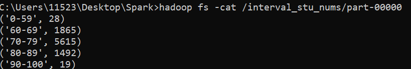

配环境比写代码难一万倍 QAQ
不要使用 Docker 配置多节点环境！
不要使用 Docker 配置多节点环境！
不要使用 Docker 配置多节点环境！
如果你要使用 docker 请使用老师给的第二个 pdf 文件上的方案也就是配置单节点的环境。这个方案是可行的。但我并没有走这个方案，因为配多节点的时候我的系统环境产生了不可名状的变化，导致我配置单节点时仍然报错，所以这篇博客是针对本地配置 Hadoop 的文章
在整个问题中，你会遇到非常多次的需要下载老版本的情况，请认准 release archives 字样，它会带你去旧版本的下载界面，你会遇到多种多样的报错，请在报错时尝试清空 namenode 和 datanode 里面的文件重新配置。
# 环境配置遇到的问题及解决方案# 无法解压 tar.gz 文件？在打开管理员模式的命令提示符 中，使用指令 tar -zxvf fileName.tar.gz
# NodeManager 启动时遇到错误NodeManager 启动时遇到了一个 java.lang.ExceptionInInitializerError JAVA1.8 下载地址
# pyspark 指令报错你的 Python 版本太高了 python3.6.3
# 卡在 running job 后不动了修改 xml 里面的配置，包括 yarn-site、hdfs-site、core-site、mapred-site，后面会给出我的配置和详细的信息。
# 显示不了中文字符在控制面板的时钟与区域 -> 区域 -> 管理 -> 更改系统区域设置 -> 选用 beta 版
# 环境配置Hadoop 3.0.0
我的主机名是 LAPTOP-1A91HHJ4, 如果你要查看自己的主机名可在命令指示符中输入’hostname’，即可得到主机名
# core-site.yml1 2 3 4 5 6 7 8 9 10 11 12 13 14 15 16 17 18 19 20 21 22 23 24 25 <?xml version="1.0" encoding="UTF-8"?> <?xml-stylesheet type="text/xsl" href="configuration.xsl"?> <!-- Licensed under the Apache License, Version 2.0 (the "License"); you may not use this file except in compliance with the License. You may obtain a copy of the License at http://www.apache.org/licenses/LICENSE-2.0 Unless required by applicable law or agreed to in writing, software distributed under the License is distributed on an "AS IS" BASIS, WITHOUT WARRANTIES OR CONDITIONS OF ANY KIND, either express or implied. See the License for the specific language governing permissions and limitations under the License. See accompanying LICENSE file. --> <!-- Put site-specific property overrides in this file. --> <configuration> <property> <name>fs.defaultFS</name> <value>hdfs://localhost:9000</value> </property> </configuration>
# hdfs-site.yml1 2 3 4 5 6 7 8 9 10 11 12 13 14 15 16 17 18 19 20 21 22 23 24 25 26 27 28 29 30 31 32 33 34 35 36 37 38 39 40 41 42 43 <?xml version="1.0" encoding="UTF-8"?> <?xml-stylesheet type="text/xsl" href="configuration.xsl"?> <!-- Licensed under the Apache License, Version 2.0 (the "License"); you may not use this file except in compliance with the License. You may obtain a copy of the License at http://www.apache.org/licenses/LICENSE-2.0 Unless required by applicable law or agreed to in writing, software distributed under the License is distributed on an "AS IS" BASIS, WITHOUT WARRANTIES OR CONDITIONS OF ANY KIND, either express or implied. See the License for the specific language governing permissions and limitations under the License. See accompanying LICENSE file. --> <!-- Put site-specific property overrides in this file. --> <configuration> <property> <name>dfs.replication</name> <value>1</value> </property> <property> <name>dfs.namenode.name.dir</name> <value>file:///C:/Hadoop/data/namenode</value> </property> <property> <name>dfs.datanode.data.dir</name> <value>file:///C:/Hadoop/data/datanode</value> </property> <property> <name>dfs.namenode.http-address</name> <value>LAPTOP-1A91HHJ4:9089</value> </property> <property> <name>dfs.datanode.http.address</name> <value>LAPTOP-1A91HHJ4:9088</value> </property> </configuration>
# yarn-site1 2 3 4 5 6 7 8 9 10 11 12 13 14 15 16 17 18 19 20 21 22 23 24 25 26 27 28 29 30 31 32 33 34 35 36 37 38 39 40 41 42 43 44 45 46 47 48 49 50 51 52 53 54 55 56 57 58 59 60 61 62 63 64 65 66 67 68 69 70 71 72 73 74 75 76 77 78 79 80 81 82 83 84 85 86 87 <?xml version="1.0"?> <!-- Licensed under the Apache License, Version 2.0 (the "License"); you may not use this file except in compliance with the License. You may obtain a copy of the License at http://www.apache.org/licenses/LICENSE-2.0 Unless required by applicable law or agreed to in writing, software distributed under the License is distributed on an "AS IS" BASIS, WITHOUT WARRANTIES OR CONDITIONS OF ANY KIND, either express or implied. See the License for the specific language governing permissions and limitations under the License. See accompanying LICENSE file. --> <configuration> <!-- Site specific YARN configuration properties --> <property> <name>yarn.nodemanager.aux-services</name> <value>mapreduce_shuffle</value> </property> <property> <name>yarn.nodemanager.auxservices.mapreduce.shuffle.class</name> <value>org.apache.hadoop.mapred.ShuffleHandler</value> </property> <property> <name>yarn.resourcemanager.hostname</name> <value>LAPTOP-1A91HHJ4</value> </property> <property> <name>yarn.resourcemanager.bind-host</name> <value>0.0.0.0</value> </property> <property> <name>yarn.nodemanager.resource.memory-mb</name> <value>20480</value> <!-- 根据你的集群配置调整 --> </property> <property> <name>yarn.scheduler.minimum-allocation-mb</name> <value>2048</value> <!-- 根据你的集群配置调整 --> </property> <property> <name>yarn.nodemanager.resource.cpu-vcores</name> <value>4</value> <!-- 根据你的集群配置调整 --> </property> <property> <name>yarn.nodemanager.vmem-pmem-ratio</name> <value>2.1</value> </property> <property> <name>yarn.scheduler.maximum-allocation-vcores</name> <value>4</value> <!-- 根据你的集群配置调整 --> </property> <property> <name>yarn.resourcemanager.address</name> <value>LAPTOP-1A91HHJ4:8032</value> </property> <property> <name>yarn.resourcemanager.scheduler.address</name> <value>LAPTOP-1A91HHJ4:8030</value> </property> <property> <name>yarn.resourcemanager.resource-tracker.address</name> <value>LAPTOP-1A91HHJ4:8031</value> </property> <property> <name>yarn.resourcemanager.admin.address</name> <value>LAPTOP-1A91HHJ4:8033</value> </property> <property> <name>yarn.resourcemanager.webapp.address</name> <value>LAPTOP-1A91HHJ4:8088</value> </property> </configuration>
# mapred-site1 2 3 4 5 6 7 8 9 10 11 12 13 14 15 16 17 18 19 20 21 22 23 24 25 26 27 28 29 30 31 32 33 34 35 36 37 38 39 40 41 <?xml version="1.0"?> <?xml-stylesheet type="text/xsl" href="configuration.xsl"?> <!-- Licensed under the Apache License, Version 2.0 (the "License"); you may not use this file except in compliance with the License. You may obtain a copy of the License at http://www.apache.org/licenses/LICENSE-2.0 Unless required by applicable law or agreed to in writing, software distributed under the License is distributed on an "AS IS" BASIS, WITHOUT WARRANTIES OR CONDITIONS OF ANY KIND, either express or implied. See the License for the specific language governing permissions and limitations under the License. See accompanying LICENSE file. --> <!-- Put site-specific property overrides in this file. --> <configuration> <!-- <property> <name>mapreduce.framework.name</name> <value>yarn</value> </property>--> <property> <name>mapreduce.job.tracker</name> <value>hdfs://LAPTOP-1A91HHJ4:8001</value> <final>true</final> </property> <property> <name>mapreduce.jobhistory.address</name> <value>LAPTOP-1A91HHJ4:10020</value> </property> <property> <name>mapreduce.jobhistory.webapp.address</name> <value>LAPTOP-1A91HHJ4:19888</value> </property> </configuration>
由于我走了很多的弯路，可能这上面的配置多了很多不必要的东西，但一定是可以跑通的。
如果遇到了类似端口占用的报错请直接删除它，例如报错：Port in use:0.0.0.0:8042, 首先检查占用端口的进程：
# 问题重述一 实验目的<br> （注： <br> 为换行符）<br> <br> <br>
编写两个 Hadoop 平台上的 MapReduce 程序，分别实现如下功能：<br> <br> <br> <br> <br> <br> （注： <br> 为换行符）<br> <br> <br>
计算每个学生必修课的平均成绩。
统计学生必修课平均成绩在：'90100,80 89,7079,60 69 和 60 分以下’这 5 个分数段的人数。
# 具体实现# 题目 1# 问题 1# 配置 pom1 2 3 4 5 6 7 8 9 10 11 12 13 14 15 16 17 18 19 20 21 22 23 24 25 26 27 28 29 30 <?xml version="1.0" encoding="UTF-8"?> <project xmlns="http://maven.apache.org/POM/4.0.0" xmlns:xsi="http://www.w3.org/2001/XMLSchema-instance" xsi:schemaLocation="http://maven.apache.org/POM/4.0.0 http://maven.apache.org/xsd/maven-4.0.0.xsd"> <modelVersion>4.0.0</modelVersion> <groupId>com.ls</groupId> <artifactId>StuAvg</artifactId> <version>1.0-SNAPSHOT</version> <dependencies> <dependency> <groupId>org.apache.hadoop</groupId> <artifactId>hadoop-client</artifactId> <version>3.3.3</version> </dependency> </dependencies> <properties> <maven.compiler.source>22</maven.compiler.source> <maven.compiler.target>22</maven.compiler.target> <project.build.sourceEncoding>UTF-8</project.build.sourceEncoding> </properties> <build> <finalName>StuAvg</finalName> </build> </project>
剩下的配置文件与之类似，不再赘述
# 代码1 2 3 4 5 6 7 8 9 10 11 12 13 14 15 16 17 18 19 20 21 22 23 24 25 26 27 28 29 30 31 32 33 34 35 36 37 38 39 40 41 42 43 44 45 46 47 48 49 50 51 52 53 54 55 56 57 58 59 60 61 62 63 64 65 66 package com.ls; import org.apache.hadoop.conf.Configuration; import org.apache.hadoop.fs.Path; import org.apache.hadoop.io.DoubleWritable; import org.apache.hadoop.io.LongWritable; import org.apache.hadoop.io.Text; import org.apache.hadoop.mapreduce.Job; import org.apache.hadoop.mapreduce.Mapper; import org.apache.hadoop.mapreduce.Reducer; import org.apache.hadoop.mapreduce.lib.input.FileInputFormat; import org.apache.hadoop.mapreduce.lib.output.FileOutputFormat; import java.io.IOException; public class StuAvg { public static class StuMap extends Mapper<LongWritable, Text, Text, LongWritable> { @Override protected void map (LongWritable key, Text value, Context context) throws IOException, InterruptedException { String line = value.toString(); String[] field = line.split(","); if ( field.length == 5 && field[3].equals("必修")) { String Name = field[1] ; long score = Long.parseLong(field[4]); context.write(new Text(Name), new LongWritable(score)); } } } public static class StuReduce extends Reducer<Text, LongWritable, Text, DoubleWritable> { @Override protected void reduce(Text key, Iterable<LongWritable> values, Context context) throws IOException, InterruptedException { long sum = 0; int count = 0; for (LongWritable val : values) { sum += val.get(); count++; } if (count > 0) { double average = (double) sum / (double) count; context.write(key, new DoubleWritable(average)); } } } public static void main(String[] args) throws Exception { Configuration conf = new Configuration(); Job job = Job.getInstance(conf); job.setJarByClass(StuMap.class); job.setMapperClass(StuMap.class); job.setReducerClass(StuReduce.class); job.setMapOutputKeyClass(Text.class); job.setMapOutputValueClass(LongWritable.class); job.setOutputKeyClass(Text.class); job.setOutputValueClass(DoubleWritable.class); FileInputFormat.setInputPaths(job, new Path(args[0])); FileOutputFormat.setOutputPath(job, new Path(args[1])); System.exit(job.waitForCompletion(true) ? 0 : 1); } }
# 问题 21 2 3 4 5 6 7 8 9 10 11 12 13 14 15 16 17 18 19 20 21 22 23 24 25 26 27 28 29 30 31 32 33 34 35 36 37 38 39 40 41 42 43 44 45 46 47 48 49 50 51 52 53 54 55 56 57 58 59 60 61 62 63 64 65 66 package com.ls; import org.apache.hadoop.conf.Configuration; import org.apache.hadoop.fs.Path; import org.apache.hadoop.io.DoubleWritable; import org.apache.hadoop.io.LongWritable; import org.apache.hadoop.io.Text; import org.apache.hadoop.mapreduce.Job; import org.apache.hadoop.mapreduce.Mapper; import org.apache.hadoop.mapreduce.Reducer; import org.apache.hadoop.mapreduce.lib.input.FileInputFormat; import org.apache.hadoop.mapreduce.lib.output.FileOutputFormat; import java.io.IOException; public class ClassAvg { public static class Map extends Mapper<LongWritable, Text, Text, LongWritable> { @Override protected void map (LongWritable key, Text value, Context context) throws IOException, InterruptedException { String line = value.toString(); String[] field = line.split(","); if ( field.length == 5 ) { String Name = field[0]+"_"+field[2] ; long score = Long.parseLong(field[4]); context.write(new Text(Name), new LongWritable(score)); } } } public static class Reduce extends Reducer<Text, LongWritable, Text, DoubleWritable> { @Override protected void reduce(Text key, Iterable<LongWritable> values, Context context) throws IOException, InterruptedException { long sum = 0; int count = 0; for (LongWritable val : values) { sum += val.get(); count++ ; } double average = (double) sum / (double) count; context.write(key, new DoubleWritable(average)); } } public static void main(String[] args) throws Exception { Configuration conf = new Configuration(); Job job = Job.getInstance(conf); job.setJarByClass(Map.class); job.setMapperClass(Map.class); job.setReducerClass(Reduce.class); job.setMapOutputKeyClass(Text.class); job.setMapOutputValueClass(LongWritable.class); job.setOutputKeyClass(Text.class); job.setOutputValueClass(DoubleWritable.class); FileInputFormat.setInputPaths(job, new Path(args[0])); FileOutputFormat.setOutputPath(job, new Path(args[1])); System.exit(job.waitForCompletion(true) ? 0 : 1); } }
# 题目 2# 代码1 2 3 4 5 6 7 8 9 10 11 12 13 14 15 16 17 18 19 20 21 22 23 24 25 26 27 28 29 30 31 32 33 34 35 36 37 38 39 40 41 42 43 44 45 46 47 48 49 50 51 52 53 54 55 56 57 58 59 60 61 62 63 64 65 66 67 68 69 70 71 72 package com.ls; import org.apache.hadoop.conf.Configuration; import org.apache.hadoop.fs.Path; import org.apache.hadoop.io.DoubleWritable; import org.apache.hadoop.io.LongWritable; import org.apache.hadoop.io.Text; import org.apache.hadoop.mapreduce.Job; import org.apache.hadoop.mapreduce.Mapper; import org.apache.hadoop.mapreduce.Reducer; import org.apache.hadoop.mapreduce.lib.input.FileInputFormat; import org.apache.hadoop.mapreduce.lib.output.FileOutputFormat; import java.io.IOException; import java.util.ArrayList; public class GrandPC { public static class Map extends Mapper<LongWritable, Text, Text, Text> { @Override protected void map (LongWritable key, Text value, Context context) throws IOException, InterruptedException { String line = value.toString(); String[] names = line.split(","); String child = names[0].trim()+"_child"; String grand = names[1].trim()+"_parent"; context.write(new Text(names[0].trim()), new Text(grand)); context.write(new Text(names[1].trim()), new Text(child)); } } public static class Reduce extends Reducer<Text, Text, Text, Text> { @Override protected void reduce (Text key, Iterable<Text> values, Context context) throws IOException, InterruptedException { String grand = key.toString(); ArrayList<String> parents = new ArrayList<>() ; ArrayList<String> children = new ArrayList<>() ; for (Text value : values) { String node = value.toString(); String [] name = node.split("_") ; if ( name[1].equals("child") ) { children.add(name[0].trim()); } else if ( name[1].equals("parent") ) { parents.add(name[0].trim()); } else { continue ; } } for (String child : children) { for (String parent : parents) { context.write(new Text(child), new Text(parent)); } } } } public static void main(String[] args) throws Exception { Configuration conf = new Configuration(); Job job = Job.getInstance(conf); job.setJarByClass(Map.class); job.setMapperClass(Map.class); job.setReducerClass(Reduce.class); job.setMapOutputKeyClass(Text.class); job.setMapOutputValueClass(Text.class); job.setOutputKeyClass(Text.class); job.setOutputValueClass(Text.class); FileInputFormat.setInputPaths(job, new Path(args[0])); FileOutputFormat.setOutputPath(job, new Path(args[1])); System.exit(job.waitForCompletion(true) ? 0 : 1); } }
# 思路思路是输入的数据例如 child,parent，我们将它变为两组输出，一组为 child,parentParent, 一组为 parent,childChild。在 map 阶段，若对于同一 KEY 有多个值，我们将值划分为 Parent 组和 Child 组一一匹配作为祖先 - 孩子组输出。
# 题目 3# 代码1 2 3 4 5 6 7 8 9 10 11 12 13 14 15 16 17 18 19 20 21 22 23 24 25 26 27 28 29 30 31 32 33 # -*- coding: gb18030 -*- from pyspark import SparkConf, SparkContext conf = SparkConf().setMaster("local").setAppName("gradecount") sc = SparkContext(conf = conf) grades = sc.textFile("/spark/grades.txt") def f(x): if(x >= 90 and x <= 100): return ("90-100") if(x >= 80 and x < 90): return ("80-89") if(x >= 70 and x < 80): return ("70-79") if(x >= 60 and x < 70): return ("60-69") if(x < 60): return ("0-59") grades = grades.filter(lambda line: "必修" in line) name_grade_pairs = grades.map(lambda line: (line.split(",")[1], (int(line.split(",")[4]), 1))) # name_grade_pairs.saveAsTextFile("name_grade_pairs") avg_grades = name_grade_pairs.reduceByKey(lambda x1, x2: (x1[0] + x2[0], x1[1] + x2[1])).mapValues(lambda x: int(x[0] / x[1])).sortBy(lambda x: x[1], ascending=True) avg_grades.saveAsTextFile("/avg_grades") interval_grades = avg_grades.map(lambda x: (f(x[1]), 1)) interval_stu_nums = interval_grades.reduceByKey(lambda x, y: (x + y)).sortByKey() interval_stu_nums.saveAsTextFile("/interval_stu_nums")
# 具体指令# 打开 hadoop# StuAvg1 2 3 4 5 6 7 8 9 10 mvn clean mvn package hadoop fs -mkdir /StuAvg hadoop fs -put grades.txt /StuAvg hadoop jar ./target/StuAvg.jar com.ls.StuAvg /StuAvg/grades.txt /output1 hadoop fs -ls /output1 hadoop fs -cat /output1/part-r-00000 hadoop fs -rm -r /output1
# ClassAvg1 2 3 4 5 6 7 8 9 10 mvn clean mvn package hadoop fs -mkdir /ClassAvg hadoop fs -put grades.txt /ClassAvg hadoop jar ./target/ClassAvg.jar com.ls.ClassAvg /ClassAvg/grades.txt /output2 hadoop fs -ls /output2 hadoop fs -cat /output2/part-r-00000 hadoop fs -rm -r /output2
# GrandPC1 2 3 4 5 6 7 8 9 10 mvn clean mvn package hadoop fs -mkdir /GrandPC hadoop fs -put child-parent.txt /GrandPC hadoop jar ./target/GrandPC.jar com.ls.GrandPC /GrandPC/child-parent.txt /output3 hadoop fs -ls /output3 hadoop fs -cat /output3/part-r-00000 hadoop fs -rm -r /output3
# Spark1 2 3 4 5 6 7 8 9 10 11 start-dfs hadoop fs -mkdir /spark hadoop fs -put C:\Users\11523\Desktop\Spark\grades.txt /spark pyspark spark-submit Spark.py hadoop fs -cat /interval_stu_nums/part-00000 hadoop fs -cat /avg_grades/part-00000
# 实际效果# StuAvg
# ClassAvg
# GrandPC
# Spark